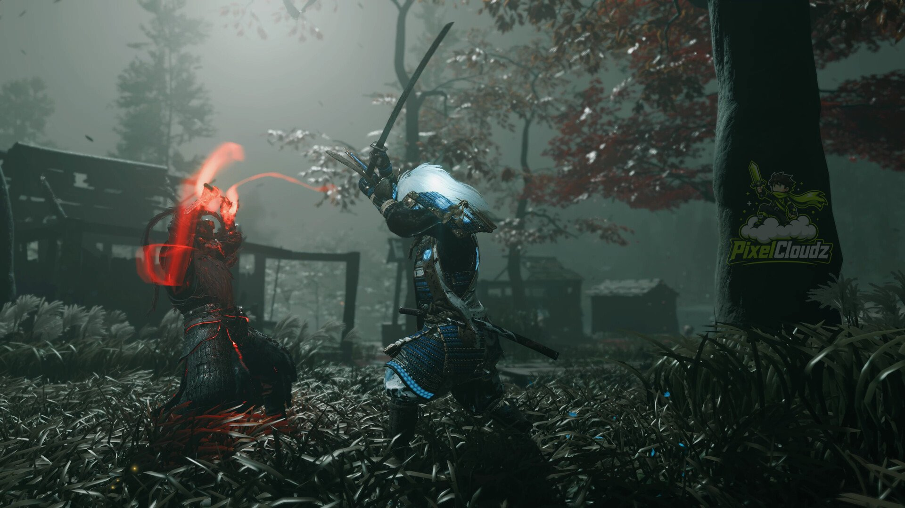

Now on PC — a stunning open-world samurai epic set in feudal Japan that still holds up years after its console debut.
Editor's Score
Presentation Score
Replayability Score
Ghost of Tsushima's PC port gives a whole new audience a shot at what's still one of the best-looking open-world games ever made, and the samurai combat underneath the visuals holds up just as well now as it did at launch.
The game's guiding wind mechanic — literal wind gusts that point you toward objectives instead of a map marker — remains one of the smartest, least-copied ideas in open-world design. It keeps you looking at the world instead of a minimap.
Sword fighting revolves around switching stances to counter specific enemy types, and standoffs (instant one-hit duels at the start of encounters) are still some of the most tense, cinematic moments the genre has produced.
Years on, this is still one of the best-looking and most confidently-directed open-world games available, and the PC port runs great on a wide range of hardware. If you missed it on PS4, this is the version to play.
| Platform | Availability |
|---|---|
| Steam / PC | Supported |
| Epic Games | Supported |
| Xbox Series X|S / One | Not Supported |
| PlayStation 5 / 4 | Supported |
| Nintendo Switch | Not Supported |
| Mac | Not Supported |
| Linux (native) | Not Supported |
| Cloud Gaming (GeForce NOW) | Supported |
| Service | Availability |
|---|---|
| Xbox Game Pass | Not Supported |
| PlayStation Plus | Not Supported |
| EA Play | Not Supported |
| Ubisoft+ | Not Supported |
No reader reviews yet — be the first to share your take on Ghost of Tsushima Director's Cut.
Share Your Thoughts